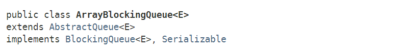

ArrayBlockingQueue是在JDK1.5时，随着J.U.C包引入的一种阻塞队列，它实现了BlockingQueue接口，底层基于数组实现：

ArrayBlockingQueue是一种有界阻塞队列，在初始构造的时候需要指定队列的容量。具有如下特点：
这里的公平策略，是指当线程从阻塞到唤醒后，以最初请求的顺序（FIFO）来添加或删除元素；非公平策略指线程被唤醒后，谁先抢占到锁，谁就能往队列中添加/删除顺序，是随机的。
ArrayBlockingQueue提供了三种构造器：
/**
* 指定队列初始容量的构造器.
*/
public ArrayBlockingQueue(int capacity) {
this(capacity, false);
}
/**
* 指定队列初始容量和公平/非公平策略的构造器.
*/
public ArrayBlockingQueue(int capacity, boolean fair) {
if (capacity <= 0)
throw new IllegalArgumentException();
this.items = new Object[capacity];
lock = new ReentrantLock(fair); // 利用独占锁的策略
notEmpty = lock.newCondition();
notFull = lock.newCondition();
}
/**
* 根据已有集合构造队列
*/
public ArrayBlockingQueue(int capacity, boolean fair, Collection<? extends E> c) {
this(capacity, fair);
final ReentrantLock lock = this.lock;
lock.lock(); // 这里加锁是用于保证items数组的可见性
try {
int i = 0;
try {
for (E e : c) {
checkNotNull(e); // 不能有null元素
items[i++] = e;
}
} catch (ArrayIndexOutOfBoundsException ex) {
throw new IllegalArgumentException();
}
count = i;
putIndex = (i == capacity) ? 0 : i; // 如果队列已满，则重置puIndex索引为0
} finally {
lock.unlock();
}
}
核心就是第二种构造器，从构造器也可以看出，ArrayBlockingQueue在构造时就指定了内部数组的大小，并通过ReentrantLock来保证并发环境下的线程安全。
ArrayBlockingQueue的公平/非公平策略其实就是内部ReentrantLock对象的策略，此外构造时还创建了两个Condition对象。在队列满时，插入线程需要在notFull上等待；当队列空时，删除线程会在notEmpty上等待：
public class ArrayBlockingQueue<E> extends AbstractQueue<E>
implements BlockingQueue<E>, java.io.Serializable {
/**
* 内部数组
*/
final Object[] items;
/**
* 下一个待删除位置的索引: take, poll, peek, remove方法使用
*/
int takeIndex;
/**
* 下一个待插入位置的索引: put, offer, add方法使用
*/
int putIndex;
/**
* 队列中的元素个数
*/
int count;
/**
* 全局锁
*/
final ReentrantLock lock;
/**
* 非空条件队列：当队列空时，线程在该队列等待获取
*/
private final Condition notEmpty;
/**
* 非满条件队列：当队列满时，线程在该队列等待插入
*/
private final Condition notFull;
//...
}
ArrayBlockingQueue会阻塞线程的方法一共4个：put(E e)、offer(e, time, unit)和take()、poll(time, unit)，我们先来看插入元素的方法。
插入元素——put(E e)
插入元素的逻辑很简单，用ReentrantLock来保证线程安全，当队列满时，则调用线程会在notFull条件队列上等待，否则就调用enqueue方法入队。
/**
* 在队尾插入指定元素，如果队列已满，则阻塞线程.
*/
public void put(E e) throws InterruptedException {
checkNotNull(e);
final ReentrantLock lock = this.lock;
lock.lockInterruptibly(); // 加锁
try {
while (count == items.length) // 队列已满。这里必须用while，防止虚假唤醒
notFull.await(); // 在notFull队列上等待
enqueue(e); // 队列未满, 直接入队
} finally {
lock.unlock();
}
}
这里需要注意一点，队列已满的时候，是通过while循环判断的,这其实是多线程设计模式中的Guarded Suspension模式：
while (count == items.length) // 队列已满。这里必须用while，防止虚假唤醒
notFull.await(); // 在notFull队列上等待
之所以这样做，是防止线程被意外唤醒，不经再次判断就直接调用enqueue方法。
enqueue方法：
private void enqueue(E x) {
final Object[] items = this.items;
items[putIndex] = x;
if (++putIndex == items.length) // 队列已满,则重置索引为0
putIndex = 0;
count++; // 元素个数+1
notEmpty.signal(); // 唤醒一个notEmpty上的等待线程(可以来队列取元素了)
}
删除元素——take()
删除元素的逻辑和插入元素类似，区别就是：删除元素时，如果队列空了，则线程需要在notEmpty条件队列上等待。
/**
* 从队首删除一个元素, 如果队列为空, 则阻塞线程
*/
public E take() throws InterruptedException {
final ReentrantLock lock = this.lock;
lock.lockInterruptibly();
try {
while (count == 0) // 队列为空, 则线程在notEmpty条件队列等待
notEmpty.await();
return dequeue(); // 队列非空，则出队一个元素
} finally {
lock.unlock();
}
}
队列非空时，调用dequeue方法出队一个元素：
private E dequeue() {
final Object[] items = this.items;
E x = (E) items[takeIndex];
items[takeIndex] = null;
if (++takeIndex == items.length) // 如果队列已空
takeIndex = 0;
count--;
if (itrs != null)
itrs.elementDequeued();
notFull.signal(); // 唤醒一个notFull上的等待线程(可以插入元素到队列了)
return x;
}
从上面的入队/出队操作，可以看出，ArrayBlockingQueue的内部数组其实是一种环形结构。
假设ArrayBlockingQueue的容量大小为6，我们来看下整个入队过程：
①初始时
②插入元素“9”
③插入元素“2”、“10”、“25”、“93”
④插入元素“90”
注意，此时再插入一个元素“90”，则putIndex变成6，等于队列容量6，由于是循环队列，所以会将tableIndex重置为0：
这是队列已经满了（count==6），如果再有线程尝试插入元素，并不会覆盖原有值，而是被阻塞。
我们再来看下出队过程：
①出队元素“9”
②出队元素“2”、“10”、“25”、“93”
③出队元素“90”
注意，此时再出队一个元素“90”，则tabeIndex变成6，等于队列容量6，由于是循环队列，所以会将tableIndex重置为0：
这是队列已经空了（count==0），如果再有线程尝试出队元素，则会被阻塞。
ArrayBlockingQueue利用了ReentrantLock来保证线程的安全性，针对队列的修改都需要加全局锁。在一般的应用场景下已经足够。对于超高并发的环境，由于生产者-消息者共用一把锁，可能出现性能瓶颈。
另外，由于ArrayBlockingQueue是有界的，且在初始时指定队列大小，所以如果初始时需要限定消息队列的大小，则ArrayBlockingQueue 比较合适。
后续，我们会介绍另一种基于单链表实现的阻塞队列——LinkedBlockingQueue，该队列的最大特点是使用了“两把锁”，以提升吞吐量。